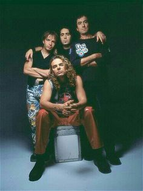

| Pág. Principal | Discografía: Maná | Formulario |  | Maná(Banda)Maná es una banda de rock pop mexicana formada en 1986 en Guadalajara, Jalisco. Actualmente la componen Fher Olvera (guitarra rítmica, armónica y voz líder), Juan Calleros, (bajo y contrabajo), Álex González (batería y voz) y Sergio Vallín (guitarra y voz). Ha vendido más de 40 millones de discos en todo el mundo. El grupo ha ganado cuatro premios Grammy, ocho Premios Grammy Latinos, cinco MTV Video Music Awards Latinoamérica, cinco Premios Juventud, veinte Premios Billboard de la Música Latina y quince de los Premios Lo Nuestro. Además ha obtenido múltiples premios por su labor a favor del cuidado del ambiente. En 2012, los integrantes de Maná dejaron su huella en el Paseo de Rock en Hollywood, Estados Unidos. Posteriormente, el 11 de febrero de 2016, Maná se convirtió en la primera banda de Rock en español en recibir una estrella en el Paseo de la fama de Hollywood, en reconocimiento a su trayectoria artística. En 2018 la Academia Latina de la Grabación (Latin Grammy) le rindió homenaje a Maná por su trayectoria musical, convirtiéndose en el primer grupo latino en recibir ese honor. Su música fusiona diferentes estilos musicales como rock suave, rock progresivo, pop latino, balada, ritmos latinos, hard rock, ska y reggae. En un principio recibieron el éxito comercial internacional en México, Australia, Vietnam y España, y desde entonces han ganado popularidad y la exposición en toda Latinoamérica, Estados Unidos, Europa Occidental, Asia y Oriente Medio.Los orígenes de Maná se remontan a un grupo musical llamado Sombrero Verde, cuyos integrantes Fher Olvera, como voz, Gustavo Orozco, a la guitarra eléctrica, y los hermanos Calleros, Juan, al bajo, Ulises, a la guitarra eléctrica y Abraham, a la batería, eran originarios de Guadalajara. En un inicio tocaban en bares. En 1980 decidieron juntarse para tocar distintos temas de grupos a los que admiraban, entre ellos The Beatles, Led Zeppelin, The Police, The Rolling Stones, entre otros. Inicialmente, se hacían llamar The Green Hat Spies, pero pronto el nombre se abrevió a Green Hat y, finalmente, se adaptó al español como Sombrero Verde, ya que la banda deseaba tocar rock en su propio idioma, siendo de los primeros grupos en aventurarse a componer sus propias canciones aun cuando el rock en español no era una tendencia. En 1981 publicaron su primer disco, Sombrero verde, con el sello Ariola; los sencillos fueron "Vampiro", "Profesor", "Long time" y "Despiértate". En 1983 lanzaron A tiempo de rock; los sencillos del álbum serían "Laura", "Hechos nada más" y "Me voy al mar". Con esta producción el grupo logró escaso éxito. En 1984, Abraham Calleros, baterista del grupo, decide dejar la banda para continuar su carrera musical en Estados Unidos. El grupo decide poner un anuncio en el periódico solicitando un nuevo integrante, gracias a esto encuentran al joven baterista de origen cubano-colombiano nacido en Miami, Álex González. La vida de Sombrero Verde continuó hasta 1986, cuando el guitarrista Gustavo Orozco decide también abandonar la agrupación para concentrarse en sus estudios académicos. Al quedar de nuevo el grupo como cuarteto, Fher decide cerrar el libro de Sombrero Verde y formar una nueva banda que fusionara el rock, pop y los ritmos latinos. En esa época comenzó en México el movimiento denominado «Rock en tu idioma», una estrategia comercial de algunas compañías discográficas encaminada a llamar la atención de los jóvenes para desarrollar música rock en español. La tendencia, importada de Argentina y España, estaba avalada por el trabajo pionero de grupos como Mecano, Soda Stereo, Enanitos Verdes, Ole, Ole, Los Prisioneros, Nacha Pop, La Unión, Radio Futura, Hombres G y Zas (la banda de Miguel Mateos); como consecuencia de ello, aparecieron varias bandas mexicanas formadas por jóvenes con influencias musicales de grupos estadounidenses y europeos. Surgieron así las bandas líderes del movimiento en México: Caifanes, Maldita Vecindad, Café Tacuba y, entre ellas, Maná, quienes lograrían éxito no solo a nivel local sino también internacionalmente. |